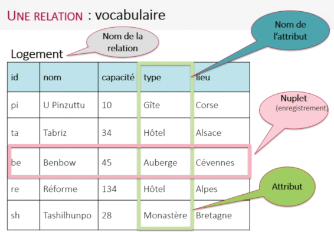

Fiche de révision: modèle relationnel¶
Ce qu’il faut savoir
La notion de relation est au coeur des bases de données relationnelles. Une relation peut être vue comme un tableau à 2 dimensions, composé de n-uplets (lignes) et d’attributs (colonnes).

Pour chaque attribut d’une relation, il est nécessaire de définir un domaine. Le domaine d’un attribut donné correspond à un ensemble fini ou infini de valeurs admissibles.
Une clef primaire est un attribut dont la valeur permet d’identifier de manière unique un n-uplet de la relation. Autrement dit, si un attribut est considéré comme clef primaire, on ne doit pas trouver dans toute la relation 2 fois la même valeur pour cet attribut.
Une clé étrangère d’une relation A est un attribut devant apparaître comme clé primaire dans une relation B afin d’établir un lien entre A et B.
On appelle schéma relationnel l’ensemble des relations présentes dans une base de données.
Dans le schéma relationnel on doit trouver:
Les noms des différentes relations;
pour chaque relation, la liste des attributs avec leur domaine respectif;
pour chaque relation, la clé primaire soulignée et éventuellement la clé étrangère précédée d’un #
Exemples:
AUTEURS ((id: int), (nom: str), (prenom : str), (ann_naissance: int), (langue_ecriture: str))
LIVRES((id: int), (titre : str), (#id_auteur: int), (ann_publi: int), (note: int))
Extrait et adapté de la fiche élaborée par David Roche sur son site